全身僵直的在小木屋中窩了一夜，結果一滴雨也沒下，放在外面的東西則全部沾上了露水。
手錶看起來有點秀逗，往往它顯示不會下雨，就會下雨；顯示下雨的話，則不一定會下雨，有可能是三天後才下。
早上起來的時候天氣還算不錯，還能看見美麗的朝霞。
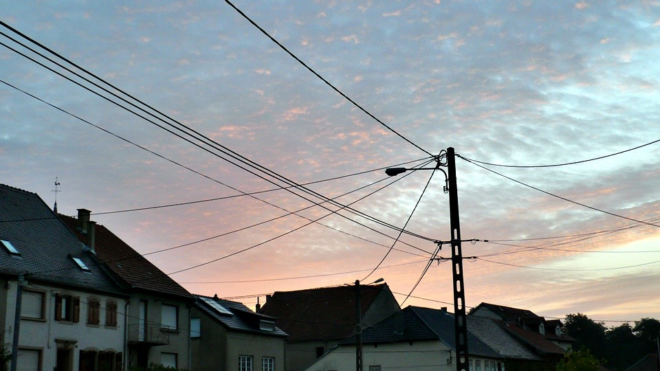
在昨天裝水的地方用接近冰點的水洗把臉，雙手去沾溼毛巾的時候早就凍到失去知覺，冰冷的毛巾胡亂的擦在臉上，整個臉也麻掉了。
這麼一來就算清醒了，在法國的第二天，繼續努力騎車吧。
昨天還是沒騎到一百五十公里，而且是從德國入境，所以實際上在法國騎的路又更少，今天要加把勁將這些路給補完才行。
這邊就是昨天睡覺的迷你公園，幾張長椅，一個小鴨子搖搖椅跟我睡覺的小木屋。
睡袋已經收起來了，拿來包著頭的厚衣服還放在桌上，多虧有想到用厚衣服包著頭這一招，不然這麼冷的夜晚一定會睡到感冒。
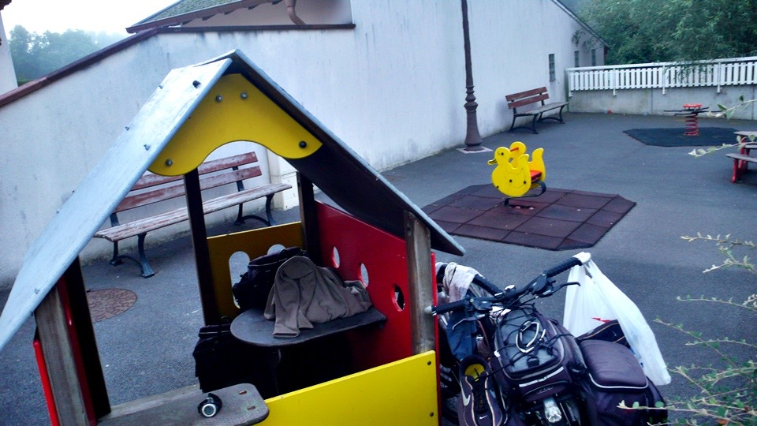
究竟有多冷呢？
既然我現在已經起床了，那就可以揭曉一下答案，都已經快要早上八點了，太陽已經冒出頭，氣溫只有五度不到，而且到處都是溼答答的水氣。
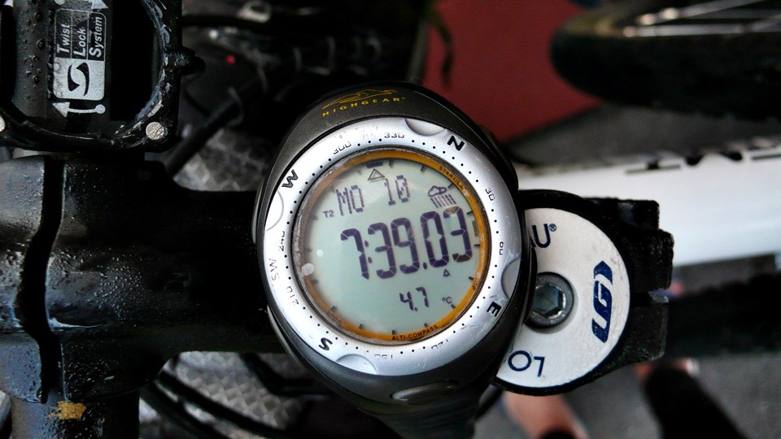
昨天深夜最冷的時候究竟有幾度，這永遠都是個謎，我也不會想知道，這樣只會讓我覺得更冷。
本來以為進入法國之後，冷冰冰的天氣就會好轉，但是看來法國跟德國都是天候異常的國家，現在阿爾卑斯山應該已經可以滑雪了吧。
經過這一晚上，更讓我確定接下來的這幾天，絕對不要在戶外露營，這是有可能會睡到死掉的。
發著抖搓著手掌，低頭看著再度洩氣的後輪，就是這樣，氣一點也不剩的全部洩光光。
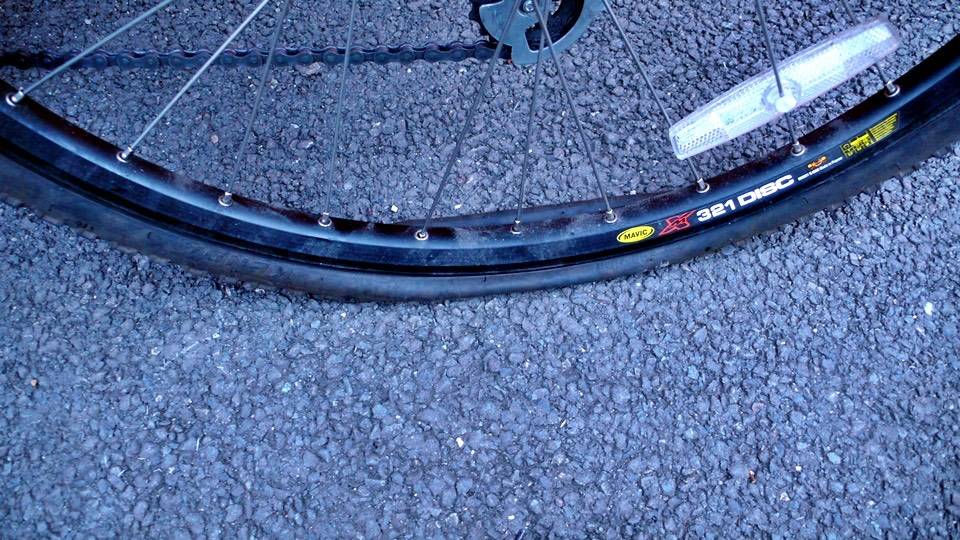
今天不想一邊騎車還要一邊打氣，利用出發之前的時間換一條內胎才是明智的選擇，這樣能保持接下來一天愉快的騎車心情。
就算不愉快，起碼不會被一條一直洩氣的內胎給打壞情緒。
這次總算讓我找到讓輪胎洩氣的兇手，從內胎還是看不出破洞，但是從外胎則發現裂痕，拿著鑷子夾出一小片的玻璃渣。
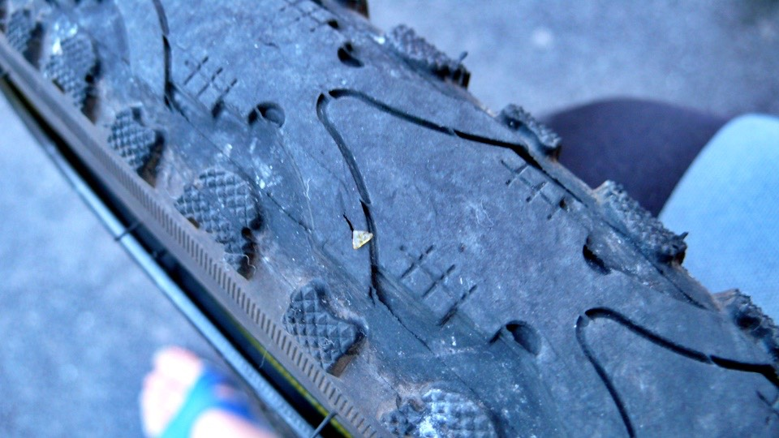
就是這一個超小的東西，又消耗了一條內胎，往好處想，起碼發現了洩氣的原因，今天騎起車來就會順利一點...吧？
非常不幸的，這也只是我的期望而已，並沒有任何的根據，手錶顯示下雨，老天爺則是整整吹了一整天的大逆風 。
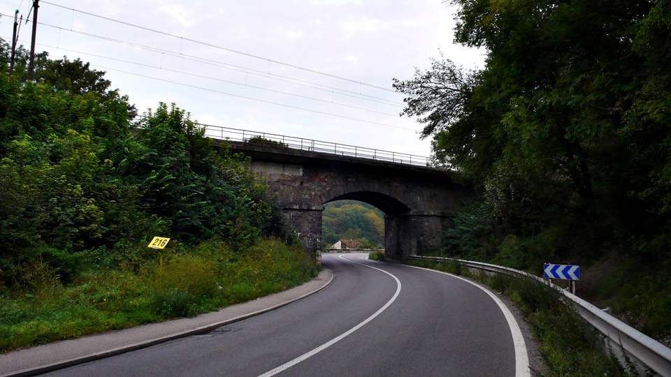
早上八點開始騎車，騎到晚上九點，中間幾乎沒有停下來休息，平均時速只有每小時十三公里，非常非常的慢。
一天能夠騎的距離，平均時速是重要的關鍵，理論值是每小時十五公里，實際上大多可以保持在十八公里左右。
簡單的估計一下，以每天騎十小時來計算，平均時速十八公里可以騎上一百八十公里，比時速十三公里整整多了五十公里。
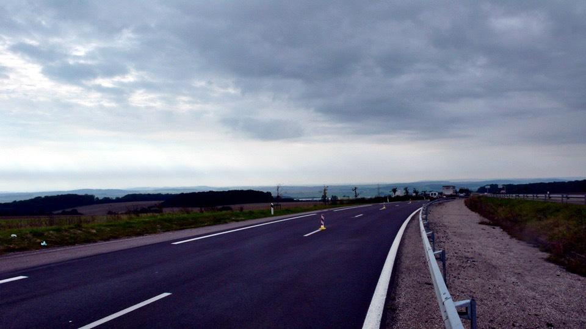
這是非常大的差異值，尤其同樣都騎了整整十個小時，並沒有輕鬆到哪裡去，唯獨總計里程硬是比較少。
騎得慢有幾個原因，不外乎就是上坡跟逆風。
上坡還說得過去，因為有上坡就有下坡，整體來說還是很划算，但是逆風就完全是被吃得死死的，一點好處也撈不到。
眼睛看著平坦的道路，卻要用有如爬陡坡般的力氣揮汗騎乘，心裡簡直不爽到極點。
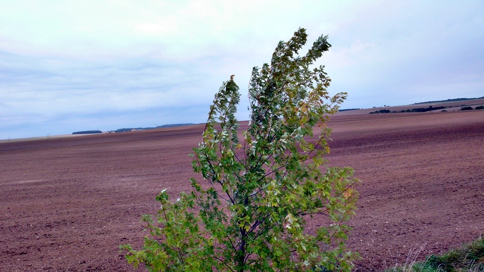
『Plat du Jour』這個招牌上的字之前有學過，意思就是今日特餐，點了之後會吃到什麼是無法預料的，就看廚師今天煮了些什麼。
有時候這也代表自助餐，有幾樣菜供你隨意吃到飽，價錢大多在十歐元左右，換成台幣不便宜，但是以當地的水準來看，這只是一般消費罷了。
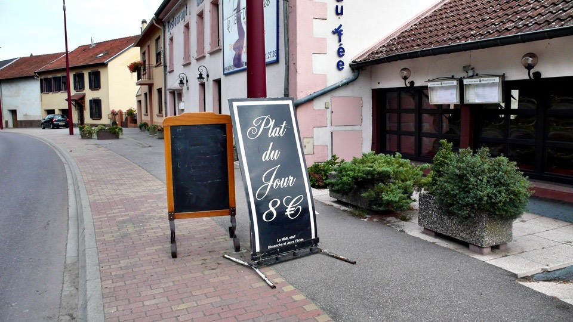
我則繼續啃吐司，法國的比較貴，一樣是七百五十公克的吐司，德國只要0.69元，法國要賣到1.05元。
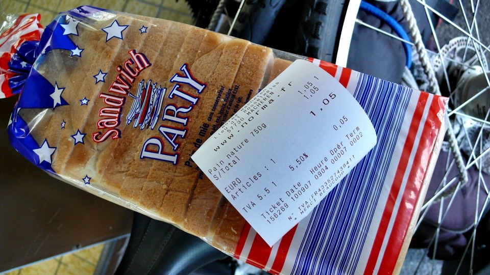
除了吐司之外，目前找不到別的替代食物來填肚子，便宜又吃得飽的只有它了。
另外還買了一包綜合水果糖，買了這兩樣東西之後，剩下的錢只有0.63歐元，連一元都不到，名符其實的窮人，窮到快要掉眼淚的那種。
吃完這條吐司之後，明天跟後天不知道要吃什麼才好，今天一整天也沒發現可以換錢的地方。
路邊發現的廣告，意思應該是每回收四個噴霧式的罐子，就可以減少排放一公斤的二氧化碳。
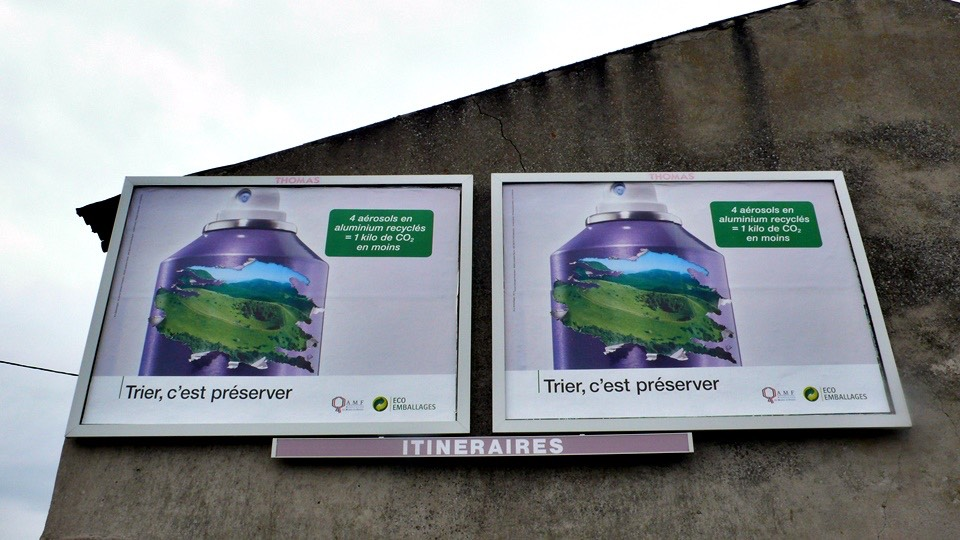
而二氧化碳正好是造成地球暖化的主要原因，所以大家要隨手做好資源回收的工作。
像德國就做得很棒，連買汽水的寶特瓶都要付額外的押瓶費，瓶子的錢快要比汽水還貴了，這樣大家就會乖乖的回收這些可以再利用的資源。
進到法國之後，在賣場中的汽水標價牌就看不到押瓶費這一個項目，一個是張貼海報廣告，另一個則是確實的執行，一比之下高低立見。
整天都是這樣陰濛濛的天氣，偶爾會降下一點毛毛雨，這條路看起來是平緩的下坡，但因為逆風的緣故，騎起來非常痛苦。
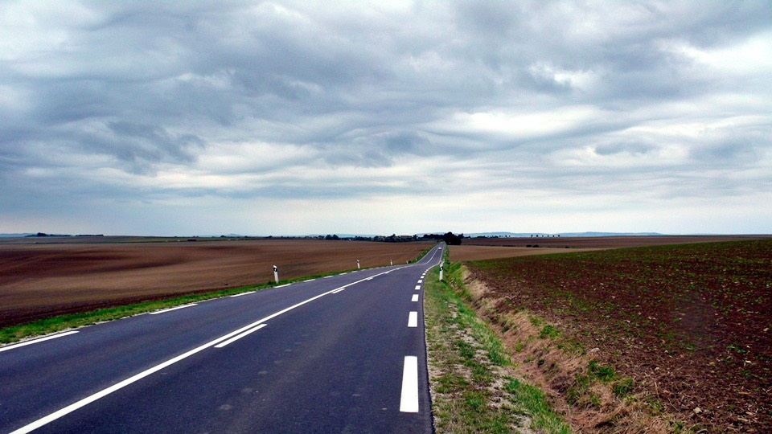
天上的雲朵則很漂亮，那旋轉變形的外型很像藝術家的畫作。
因為房子可以擋風的關係，進入城市之後會比較好騎一點，從這邊就能看見前面有個比房子還高的突起物，像城堡那樣的東西。
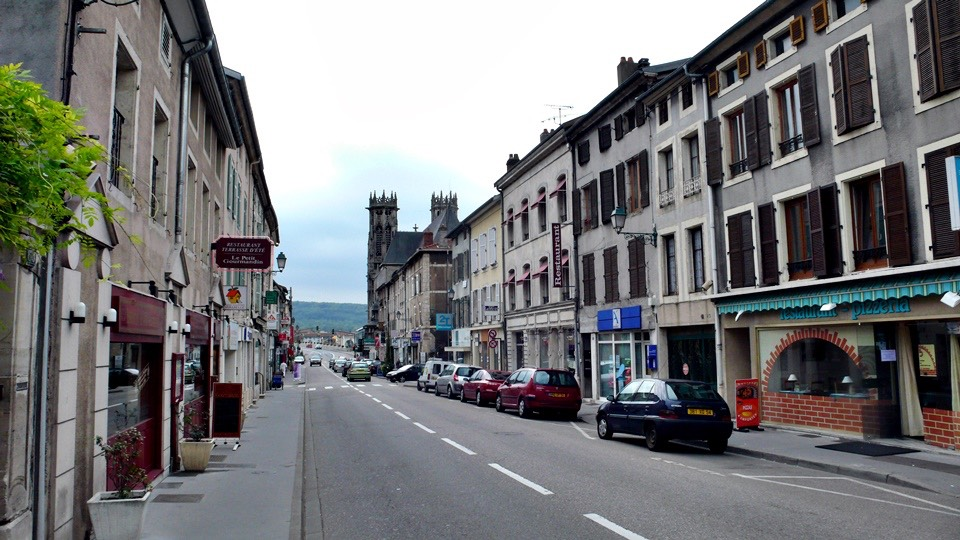
騎到正面就可以看見它的全貌，看起來應該是一座教堂，現在沒有觀光的心情，因為逆風的緣故，一整天下來根本就騎不快。
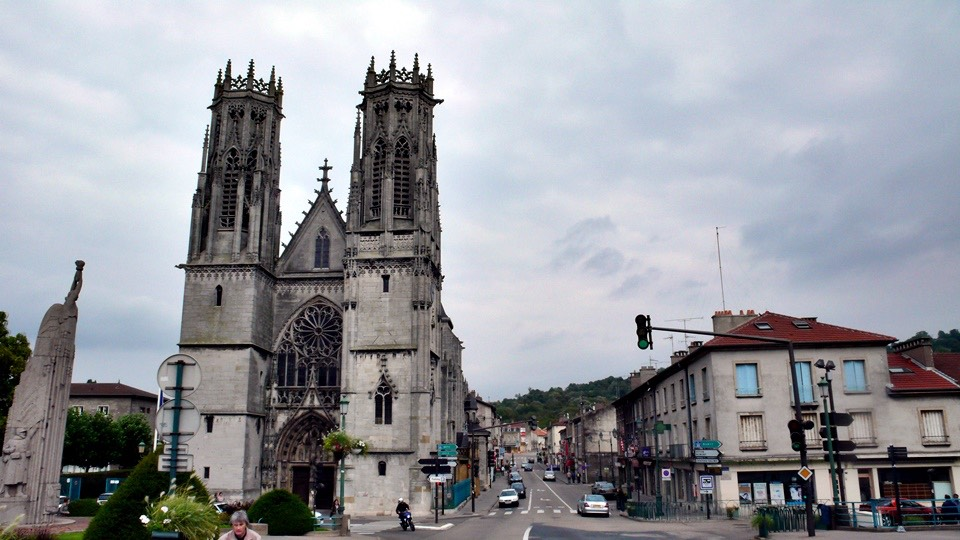
我對法國的印象就是，只要是城市，那一定會有一條漂亮的河流經過，幾乎是鐵律
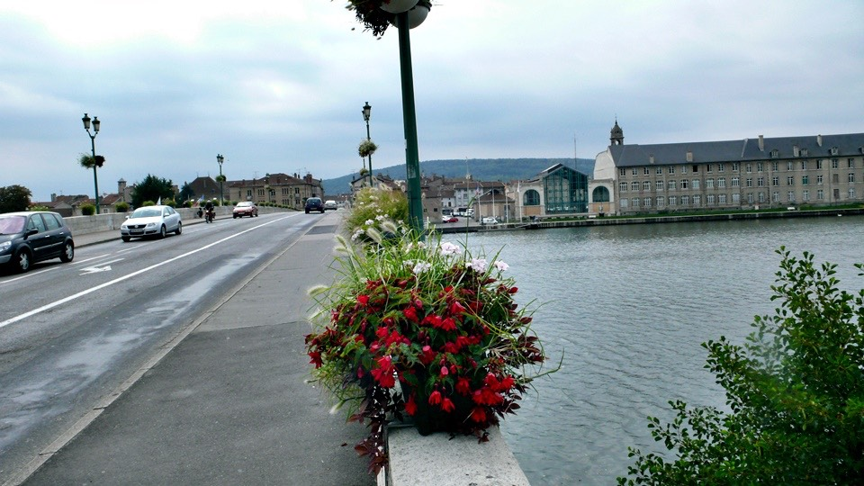
有在門口掛著國旗的建築物，通常都是市政府，規模有大有小，目前為止，我還不知道從市政府可以得到什麼樣的幫助。
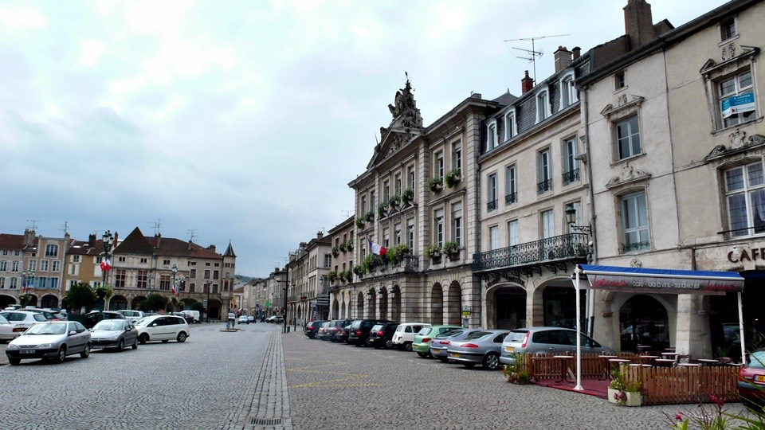
問路、借地圖我都去旅遊服務處，上網的話街邊隨處找都有，裝水跟充電則是加油站的職掌。
可是今天都沒發現加油站，實在很扯，連加油站都變得罕見起來，連帶的就導致沒水可喝，嘴巴很渴，心裡則覺得很失落。
沿路經過的都是小鄉小鎮，之前沒有把握裝水的機會，現在就有苦頭吃了。
連肚子餓吃吐司，都口乾舌燥得無法吞嚥。
為什麼法國的最後這一段路這麼難騎呢？
天氣冷得要命，我還以為昨天晚上睡到一半會被凍死，風勢又跟我做對，越是想多趕一點路結果騎得越慢。
之後看見一間修車場，抱著試試無妨的心情去問問看能不能讓我裝點水？
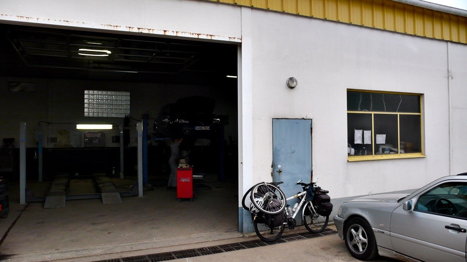
正在修車的技術員一口就答應了，帶我去茶水間，法國的自來水可以生飲，隨便我要喝多少都沒問題。
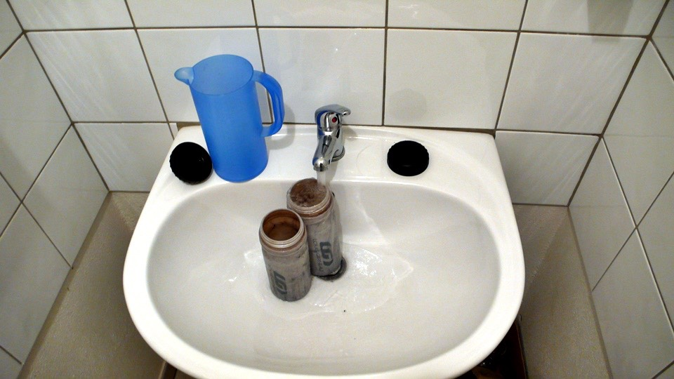
我喝了滿滿兩壺的水，將近一點五公升，然後裝滿兩個水壺帶上路，這些水要撐到今天落腳應該沒問題。
說也奇怪，剛才還覺得心情很低落，喝飽水之後心情馬上就好轉，覺得實際上倒也沒那麼糟，雖然騎得很慢，但至少有在移動。
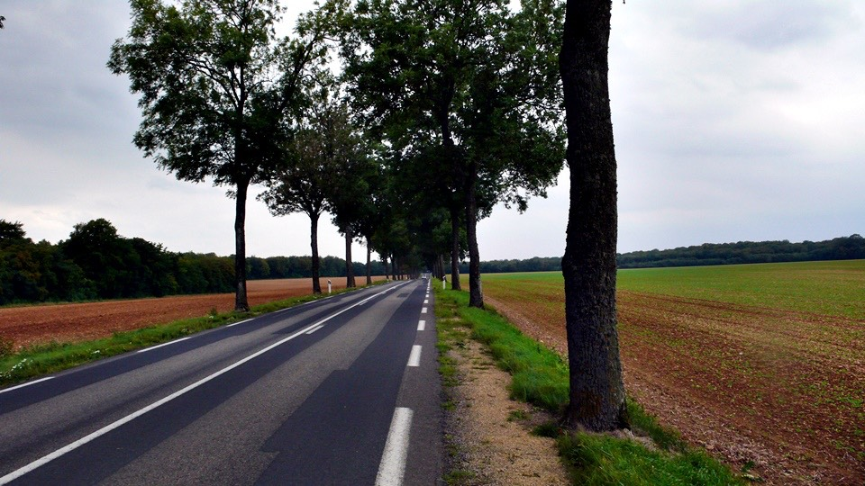
而且，往好處想，天氣雖然冷颼颼，但是畢竟沒下雨呀～
才剛這麼想，雨滴就無情的落下了，手錶顯示下雨這麼多天，現在真的開始下雨。
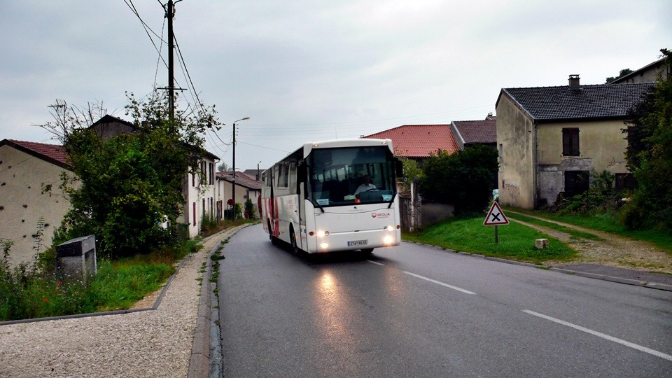
這麼冷的天氣下雨，我都懷疑打在身上的是雨水還是雪水，甚至再度下起了冰雹雨？
下過雨的天空瀰漫著一層霧氣，像是薄紗覆蓋在山頭，底下的平原是剛才逆著風騎過來的路，現在又開始爬山了。
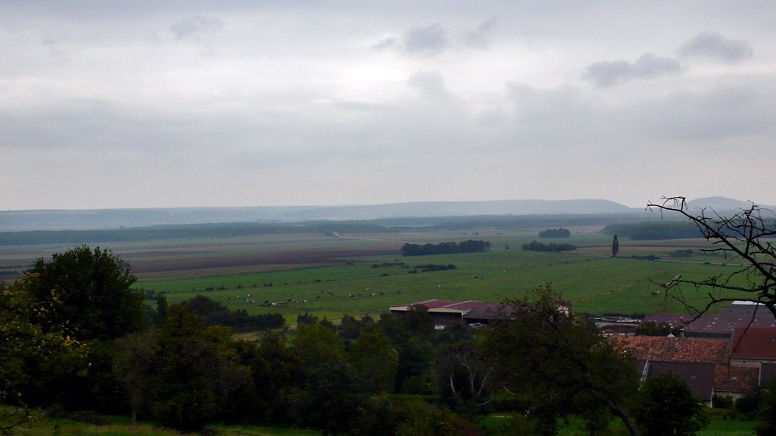
就這麼一點點的時間，厚重的雲層露出一片藍天，原來在這個雲層上方是如此好的天氣。
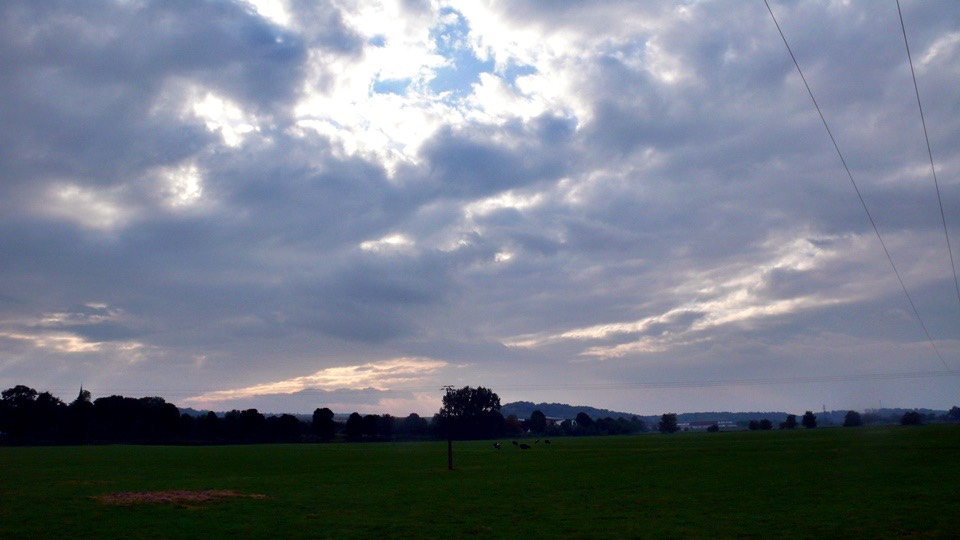
如果現在搭飛機往上衝，穿越這些雲層，想必可以看見晴空萬里的天氣。
往下鳥瞰則是被雨雲覆蓋著的大地，這樣陰霾的天氣究竟何時才會真正的放晴呢？
今天的夕陽來得也很快，一整天除了騎車之外沒有做任何別的事情，但是卻騎不了多遠，想連昨天的份一起騎完，結果連今天的份也騎不完。
夕陽非常美麗，橘紅色的光芒染紅了雲朵，看起來就像整座森林在燃燒似的。
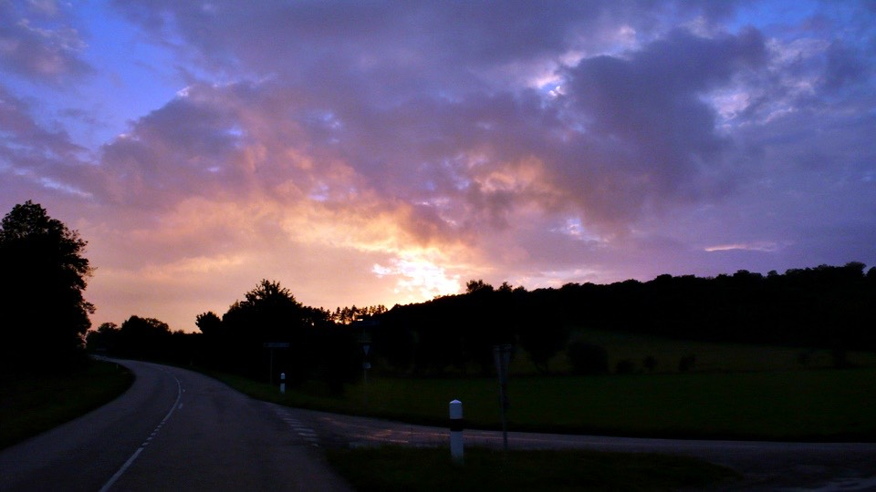
顧不得這段路是汽車專用道，我一定要騎上這個山頭，趁太陽下山之前一睹這個景色。
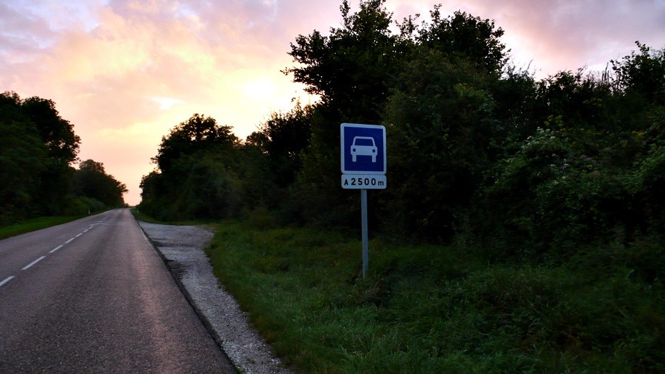
汽車專用道底下寫著『A2500m』，我以為是只要偷偷騎這一段路之後就結束了，實際上當然也不如我想像的那麼美好。
不管這些惹人厭的汽車專用道，爬上山頭之後，趕在太陽下山的最後一刻，將夕陽的美景給紀錄起來。
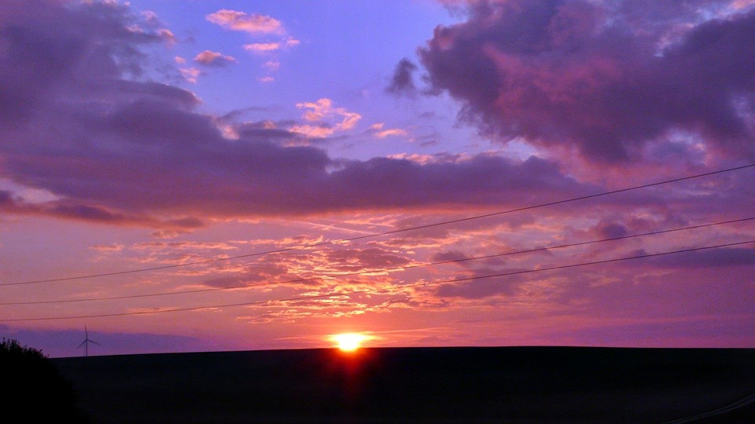
我不禁懷疑是不是自己拍照的技術太爛，還是相片沒辦法紀錄真實大自然的美景。
透過鏡頭跟確實的站在這個山頭所看到的景色跟感受到的震撼是完全不同的。
站在山頭上，可以清楚看見夕陽落下的每一個刻度，雲彩因為強風快速飄動著， 所有的一切都像有生命一樣的在運動。
旅行除了享受美食，讓我感到收穫最多的就是看見這些大自然的美景，每一天的日出跟夕陽，都是獨一無二的，都值得用心去感受。
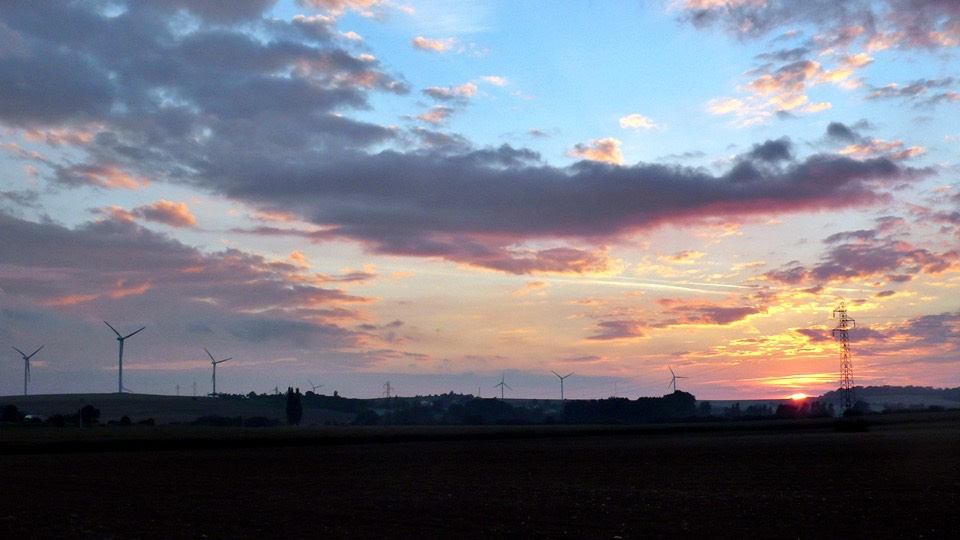
法國的風力發電機也是隨處可見，還會不時的閃著白光，看著他們轉呀轉的雖然很可愛，但也表示這一區的風勢很強，騎自行車經過是很辛苦的。
太陽已經快要看不見了，雲彩的顏色不停的轉換，空中翱翔的戰機則畫出一道道飛機雲，像是在替這幅景色添上幾筆粉彩。
騎完了這段汽車專用道之後，前面等著我的依然是汽車專用道，我必須要走這條路才有辦法繼續下面的旅程，不讓我走就會卡在這裡。
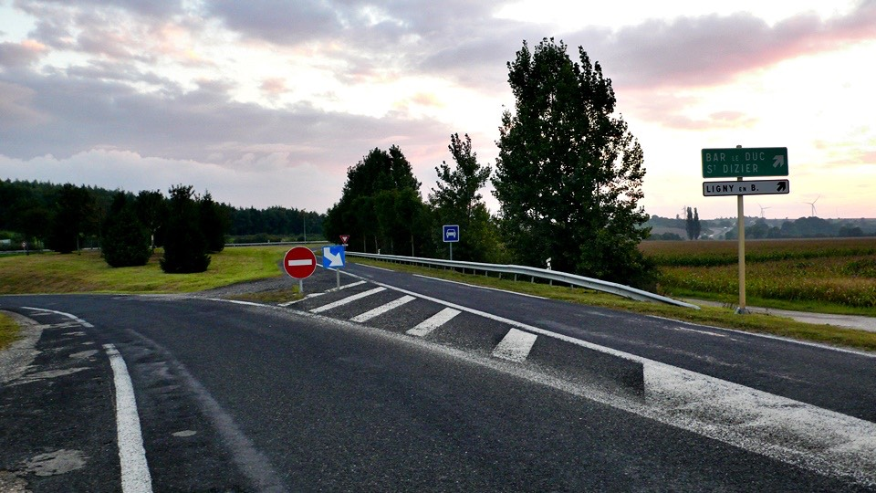
旁邊的玉米田有鄉村小路可以繞行，路況不是很好，但至少可以騎，沿著公路而開築的小路就是繼續往前走的不二選擇。
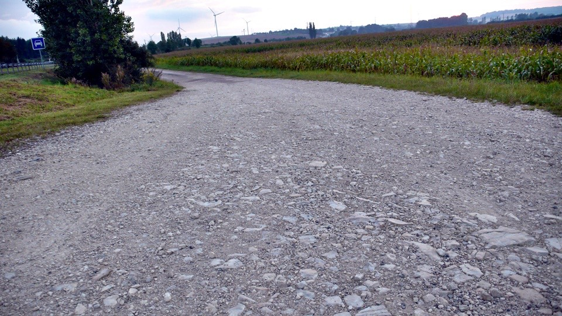
小路走到底又爬回了路面，這邊是大馬路的交流道出口，一堆禁止通行的牌子讓我沒辦法騎上去，只好順著這個出口繼續往下騎。
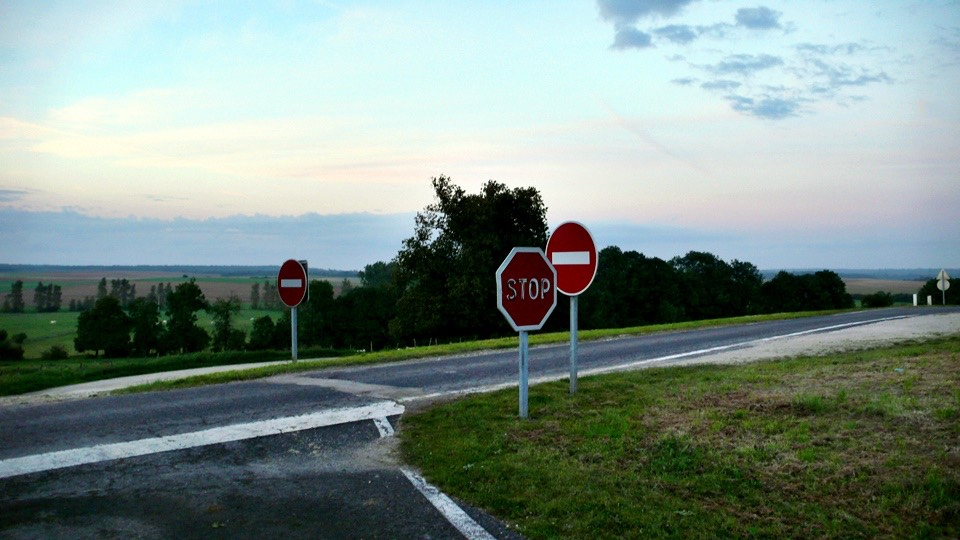
目前的所在地從地圖上找不出來，這條道路在地圖上也沒有標示，要重新定位出自己的位置，就是往城市的方向走。
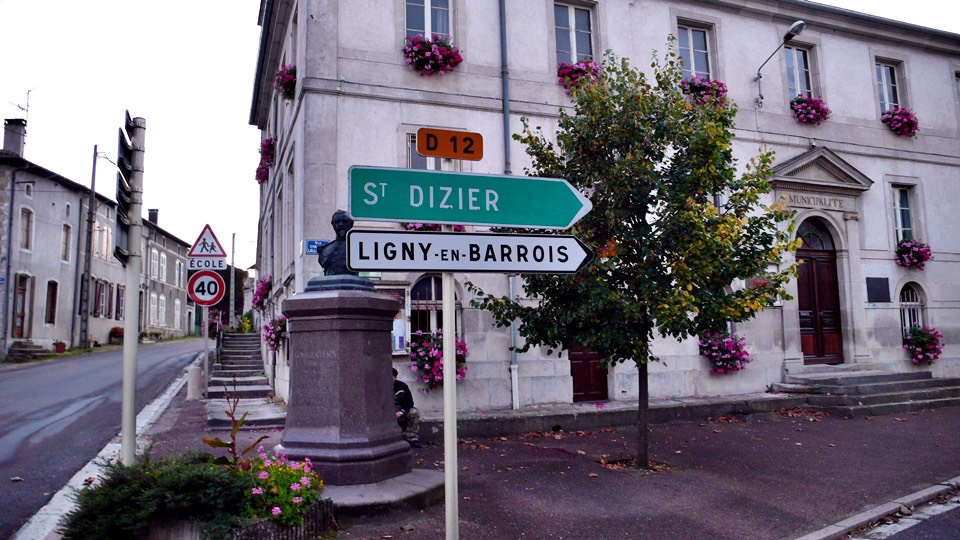
本來沒打算會經過St Dizier，但在沒別的路可以選擇的情況下，能騎就加減騎吧，最怕是連路都沒有，那才真的叫可憐。
九點不到天色就又陷入一片的黑暗，晚上會天黑是理所當然的事情，但對我來說就好像是一種詛咒，詛咒生效的時候我就沒辦法騎車。
而且氣溫會直直的往下降個不停，比溜滑梯還要快，本來白天還有十五度上下，夜晚一來臨，瞬間就跌破十度，然後不停的往下探底。
昨天睡在很迷你的小木屋中，雖然有屋頂，但是當天晚上如果真的下起雨的話，我懷疑它能擋得了多少。
今天怎麼樣都得找一個像樣一點的過夜處，如果這時候出現旅館，門口又貼著信用卡的標誌，我想自己大概會抵抗不住，刷卡換一間舒適的房間。
可是我已經能預想到住宿之後的發展，我會花上一整個晚上的時間寫遊記，實際睡眠時間只有短短幾個小時，隔天早上為了趕路又是早早出發。
花了昂貴的住宿費用，卻沒有享受到住宿的品質，那不如就找個空屋露營一晚上就好了，搞不好睡得還比較香甜。
可以刷卡的旅館沒有出現，空屋也沒有找到，在城外倒是看見一棟很像過磅場的大倉庫。
裡面很乾淨，地上的灰塵是免不了，但是這種乾淨的感覺很明顯代表有人在使用，倉庫的大門有兩層樓那麼高，並沒有關上，所以我就不請自來，
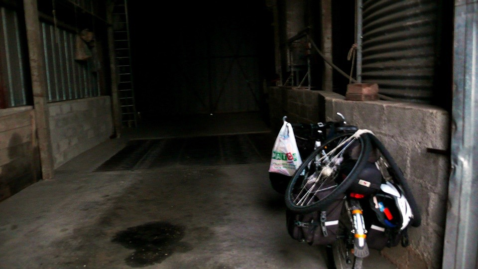
進到裡面，找一個不起眼的小角落棲身一晚，若有人經過的話，從外面也看不見異狀，當然若是走進來的話，那只好開始解釋自己的身分。
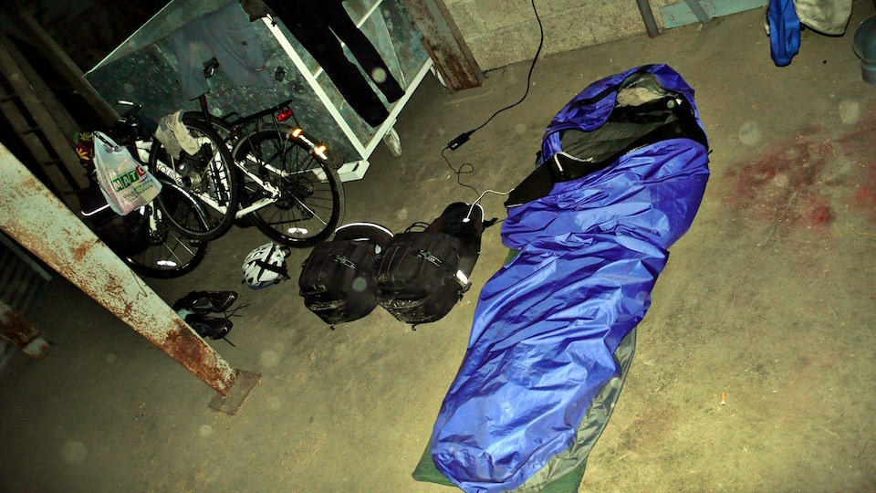
用手電筒照明，今天有寬敞的地面可以睡覺，露營三寶一個也不嫌麻煩的通通拿出來，今天晚上有遮風避雨的地方，可以睡得安心一點。
如果真的下雨，那也不用怕會淋濕，晚上也不會睡到全身僵硬、手腳發麻。
鑽進睡袋中的時候就像泡進冰水裡一樣，剛才下過雨的緣故，睡袋跟身上穿的衣服多少都沾著水氣，變得冰冰冷冷的。
藉由自己的體溫慢慢加熱，睡袋則保留這些熱度不要讓它散去，身體感覺暖和之後睡意就襲來。
一點抵抗力也沒有，同時，也不想做任何抵抗，讓我進入夢鄉吧。
夜裡再冷都沒關係，天亮的時候只要我還能睜開眼，那就又是全新的一天。
繼續閱讀：9.11 明天‧巴黎
歐洲-歐元－ 1：45 台幣
9.10
總計：2.54元
超級市場吐司、綜合水果糖2.54元